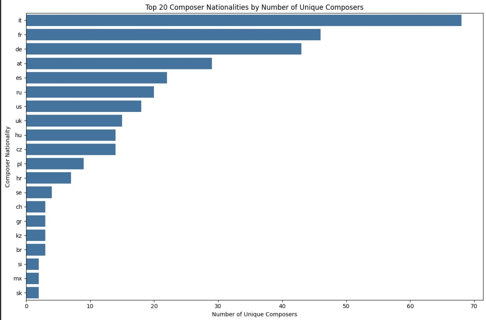
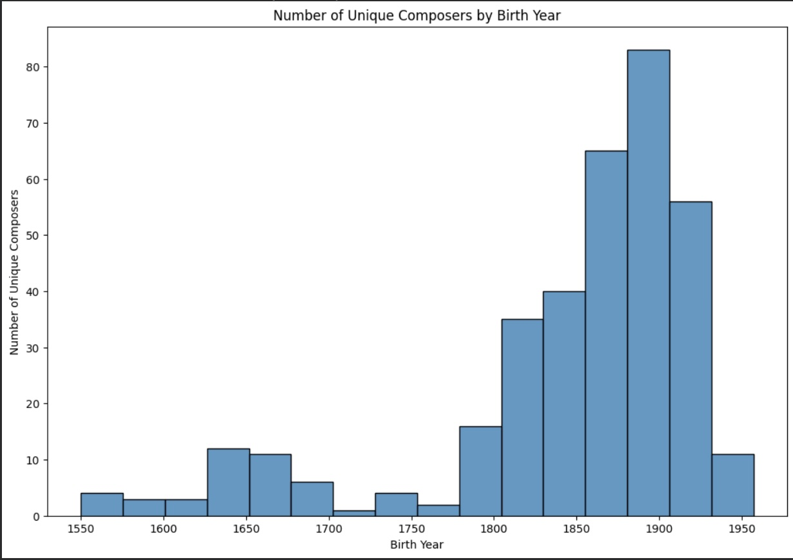

Import the necessary libraries (pandas, matplotlib, seaborn) at the beginning of your notebook by creating code cells below this text cell.
import pandas as pd
import matplotlib.pyplot as plt
import seaborn as snsLoad your chosen dataset using pandas and save it to a pandas dataframe. Please create a code cell below this text cell to do it.
from google.colab import drive
drive.mount('/content/drive')
df = pd.read_excel('/content/drive/MyDrive/opera_data.xlsx')
'''The data set I selected was a list of opera performances with information about the composers, works and performances.
I found it on Kaggle at https://www.kaggle.com/datasets/thedevastator/world-s-largest-database-of-opera-performances.'''Use the following functions to do inital exploration your dataset:
print(df.info())"class 'pandas.core.frame.DataFrame'>
RangeIndex: 33127 entries, 0 to 33126
Data columns (total 15 columns):
| # | Column | Non-null | DType |
|---|---|---|---|
| 0 | index | 33127 | int64 |
| 1 | season | 33127 | int64 |
| 2 | iso | 33127 | object |
| 3 | city | 33127 | object |
| 4 | composer | 33122 | object |
| 5 | db | 32958 | object |
| 6 | dd | 30470 | object |
| 7 | nat | 33116 | object |
| 8 | mf | 33127 | object |
| 9 | work | 33122 | object |
| 10 | worknat | 31779 | object |
| 11 | type | 33127 | object |
| 12 | start date | 33127 | int64 |
| 13 | performances | 33127 | int64 |
| 14 | production | 8844 | object |
dtypes: int64(4), object(11)
memory usage: 3.8+ MB
print(df.describe())| stat | index | season | start date | performances |
|---|---|---|---|---|
| count | 33127 | 33127 | 33127 | 33127 |
| mean | 16563.0 | 1460.87 | 20150790.0 | 4.287 |
| std | 9563.09 | 171.37 | 17454.44 | 3.707 |
| min | 0.0 | 1213.0 | 20120620.0 | 1.0 |
| 25% | 8281.5 | 1314.0 | 20140110.0 | 2.0 |
| 50% | 16563.0 | 1415.0 | 20150710.0 | 3.0 |
| 75% | 24844.5 | 1617.0 | 20161203.0 | 6.0 |
| max | 33126.0 | 1718.0 | 20180803.0 | 71.0 |
print(df.head())
| index | season | iso | city | composer | db | dd | nat | mf | work | worknat | type | start date | performances | production |
|---|---|---|---|---|---|---|---|---|---|---|---|---|---|---|
| 0 | 1213 | al | Tirana | Lortzing | 18011023 | 18510121 | de | m | Ali Pascha von Janina | de | ~B | 20130323 | 4 | NaN |
| 1 | 1213 | al | Tirana | Mozart | 17560127 | 17911205 | at | m | Don Giovanni | it | ~ | 20130518 | 3 | NaN |
| 2 | 1213 | al | Tirana | Puccini | 18581222 | 19241129 | it | m | Tosca | it | ~ | 20130213 | 2 | NaN |
| 3 | 1213 | am | Yerevan | Spendiaryan | 18711020 | 19280507 | am | m | Almast | am | ~ | 20130711 | 1 | NaN |
| 4 | 1213 | am | Yerevan | Tigranian | 18791226 | 19500210 | am | m | Anoush | am | ~ | 20130511 | 3 | NaN |
print(df.shape)(33127, 15)
print(df.columns)Index(['index', 'season', 'iso', 'city', 'composer', 'db', 'dd', 'nat', 'mf','work', 'worknat', 'type', 'start date', 'performances', 'production'],dtype='object')
During which era and country were the most operas written?
Check for and handle any missing values, duplicates, or data quality issues.
df.dropna(inplace=True)
'''This is to drop any rows with missing values.'''Create at least 2 different types of visualizations that help answer your research question.
unique_composer_nationalities = df[['composer', 'nat']].drop_duplicates()
#This finds unique combinations of composer-nationality pairs. Many composers appear multiple times in the data, which would skew my results, so this is intended to make every composer appear only once.
print(f"Number of unique composer-nationality pairs: {len(unique_composer_nationalities)}")
print("First 10 unique composer-nationality pairs:")
print(unique_composer_nationalities.head(10))
'''These get the data for composer/nationality counts by taking the nationalities of each composer-nationality pair from the unique composer count'''
composer_nationality_counts = unique_composer_nationalities['nat'].value_counts().reset_index()
composer_nationality_counts.columns = ['Nationality', 'Unique_Composer_Count']
'''This creates a barplot to display the top 20 composer nationalities, as the original fulllist of countries was very difficult to comprehend.
The X axis is the number of unique composers.
The Y axis is the composer nationality by ISO country code.
'''
plt.figure(figsize=(12, 8))
sns.barplot(x='Unique_Composer_Count', y='Nationality', data=composer_nationality_counts.head(20))
plt.title('Top 20 Composer Nationalities by Number of Unique Composers')
plt.xlabel('Number of Unique Composers')
plt.ylabel('Composer Nationality')
plt.tight_layout() # Adjust layout to prevent labels from overlapping
plt.show()

'''For these next steps, I used Gemini to help me extract the birth years of composers from the db, or date of birth, column'.
I knew that the first four integers were the birth year, so I wanted to extract those.'''
# Get a DataFrame with unique composers and their 'db' values
unique_composers_db = df[['composer', 'db']].drop_duplicates(subset=['composer'])
# Ensure 'db' is treated as a string to handle mixed types (e.g., '1840' vs '17560127')
unique_composers_db['db_str'] = unique_composers_db['db'].astype(str)
# Extract the first 4 characters as the year
unique_composers_db['birth_year'] = unique_composers_db['db_str'].str[:4]
# Convert the extracted year to numeric, coercing errors to NaN
unique_composers_db['birth_year'] = pd.to_numeric(unique_composers_db['birth_year'], errors='coerce').astype('Int64')
# Drop the intermediate string column if no longer needed
unique_composers_db = unique_composers_db.drop(columns=['db_str'])rs='coerce')
'''This creates a histogram to plot the number of unique composers by birth year.
The x axis is the birth year.
The y axis is the number of unique composers.
I decided to do 16 bins because that gives around 25 years a bin because going year by year was difficult to read.'''
plt.figure(figsize=(12, 8))
sns.histplot(x='birth_year', data=unique_composers_db, bins=16)
plt.title('Number of Unique Composers by Birth Year')
plt.xlabel('Birth Year')
plt.ylabel('Number of Unique Composers')

Write 1-2 paragraphs discussing:
My question was which place and time had the most opera composers. I decided to answer that first part by graphing the composers against their nationality, given in the 'nat' column. For the second part of the question, I decided to answer it by graphing the composers against their birth years, as the available dates were birth years, death years and years of opera performances. Even if there are likely a couple decades between a composer's birth and their first opera, this gives a good visualization of when most composers came from. The first problem with my dataset was that it was showing performances of all operas, including multiple operas by each composer. Because I wanted to focus on the composer, and not the total number of operas, I decided to limit the data to unique composers and graph that by nationality and year of birth date. The nationality visualization indicated that the 5 most popular nationalities were Italy, France, Germany, Austria and Spain. This largely matches what I know from my current knowledge of opera, so I would say that this is good for answering my research question. One thing that was suprising to me was how far Italy seemed ahead of the other countries, by almost 20 composers, while France and Germany are pretty close together. The birth year visualization suprised me because it indicated that most composers were born from about 1830 to 1930, with a spike around 1900. I feel like my conception of opera is that it's an old art form that was most popular around the 1700s or 1800s, but this graph clearly shows that composers continued well into the late 1800s and 1900s.
In terms of analysis limitations, data collecting might not be entirely accurate because of the long history of opera, and there were columns that I had to remove with no information included. Furthermore, there seems to be a cutoff for composers born around 1950, so this dataset might not include recent composers, which might also include suprising results. I focused on the composers, not their works, so an avenue of future investigation might be looking at the total opera output by county or era or the average number of operas per composer. From this dataset, which tracks performances, it would also be interesting to see which operas are the most popular and how opera popularities have shifted over time.